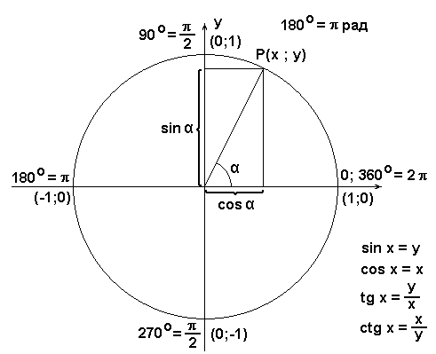
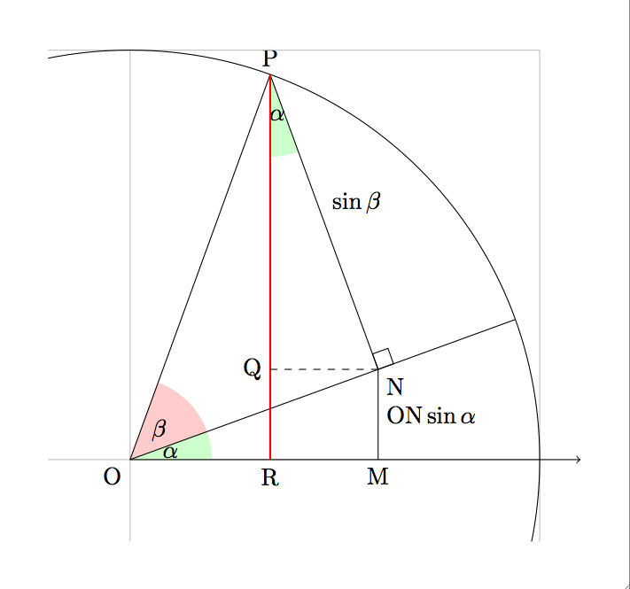

Created: 2024-09-05 Thu 17:31

Вот набор задач на указанные темы:
### Тема 1: Определение и свойства синуса, косинуса, тангенса
—
### Тема 2: Соотношение между тригонометрическими функциями одного угла
—
### Тема 3: Формулы сложения
—
### Тема 4: Формулы двойного угла
—
### Тема 5: Формулы суммы и разности
—
### Тема 6: Формулы приведения
—
### Тема 7: Упрощение тригонометрических выражений

Примеры из жизни Турмуштан мисалдар
Тарифы на такси часто следуют линейной функции, где общая стоимость проезда рассчитывается как базовый тариф плюс ставка за километр. Это можно выразить как:
Общая стоимость проезда = Базовый тариф + (Ставка за километр × Пройденные километры)
Такси тарифтери көбүнчө сызыктуу функцияны аткарат, мында жалпы жол кире негизги тарифке плюс километрге эсептелген тариф катары эсептелет. Бул төмөнкүчө чагылдырууга болот:
Жалпы жол кире = Негизги тариф + (Бир километрге тариф × Басылган километр)
В линейной модели роста население: население увеличивается на фиксированное число особей каждый год. Это означает, что если население начинается с определенного числа, оно будет расти на ту же величину каждый последующий год. Например, если население города увеличивается на 100 человек в год (r=100), линейную функцию можно выразить как:
Популяциянын өсүшүнүн сызыктуу моделинде: популяция жыл сайын жеке адамдардын белгиленген санына көбөйөт. Бул калктын белгилүү бир сандан башталса, кийинки жыл сайын ошол эле суммага өсөт дегенди билдирет. Мисалы, эгерде шаардын калкы жылына 100 адамга көбөйсө, анда сызыктуу функция төмөнкүчө чагылдырууга болот:
\[P(t) = P_0 + rt \]
Предсказание: Поскольку скорость изменения постоянна, это позволяет делать простые прогнозы. Например, если в 2020 году население города составляло 1000 человек и ежегодно увеличивается на 50 человек, то численность населения в 2025 году можно легко рассчитать следующим образом:
\(P(5)=1000+(50×5)=1,250\)
У: Для функции \( y = 2x - 5 \):
Функция үчүн \( y = 2x - 5 \):
У: Придумать собственной пример где возникает линейная функция
Сызыктуу функция пайда болгон жерде өзүңүздүн мисал келтириңиз
Упростите выражения:
### 4. Многочлены
### 5. Формулы сокращенного умножения Разложите на множители:
### 6. Уравнения с двумя неизвестными. Системы уравнений Решите систему уравнений:
### 7. Квадратные корни и действия с ними Упростите выражения: